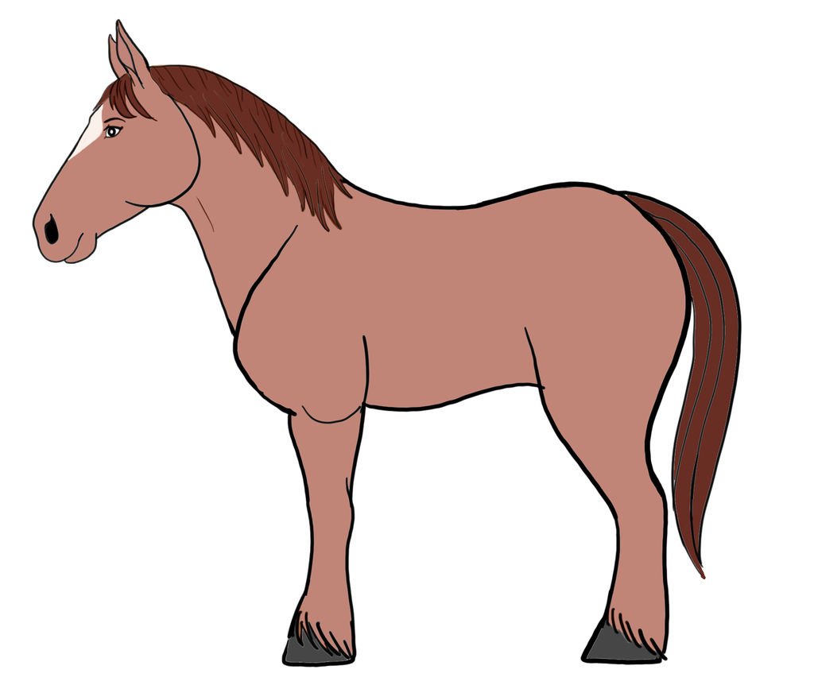
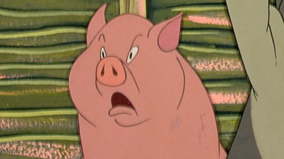
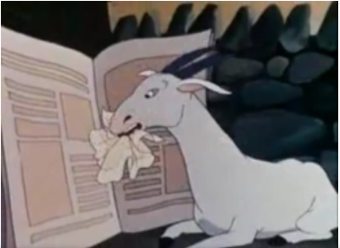
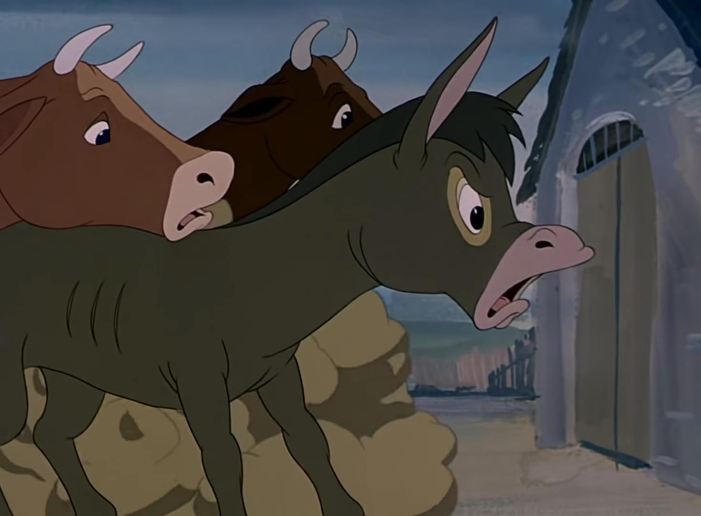

Old Major
An old boar who inspires the animals to rebel against Mr. Jones.
Napoleon
A pig who becomes the leader of Animal Farm after the rebellion.
Snowball

A pig who, along with Napoleon, leads the rebellion and helps establish Animal Farm's principles.Runs away after Napoleon's dogs chase him.
Boxer

A loyal and hardworking horse known for his motto "I will work harder" and later for the motto “Napoleon is always right”. He was the animal that did most of the work on the farm. After he got injured due to excessive work, he was sent by Napoleon to the Slaughter.
Clover
A gentle and motherly mare who cares for the other animals.She has a special relationship with Clover and Benjamin.
Mollie

A vain and self-centered mare who is more concerned with luxury than the principles of Animalism.
Squealer
A pig follower of Napoleon. He spreads the news between the animals. He is the one who convinced them to follow this leader.
Muriel
A goat who reads well and represents intelligence among the animals.
Benjamin
A cynical and skeptical donkey known for his pessimistic outlook. He is the oldest animal on the farm and he is Boxer's best friend. He tried to save him from being sent to the slaughter but he failed.
The sheep

Represent the easily manipulated masses who follow the leaders without question.
The hens

Represent the common workers who are exploited for their labor.
The cows

Provide milk for the farm and symbolize the working class.
The dogs

Initially, they serve as Napoleon's security force and enforcers of his rule.
The pigs

(aside from Napoleon and Snowball) - Represent the intelligentsia and ruling class.